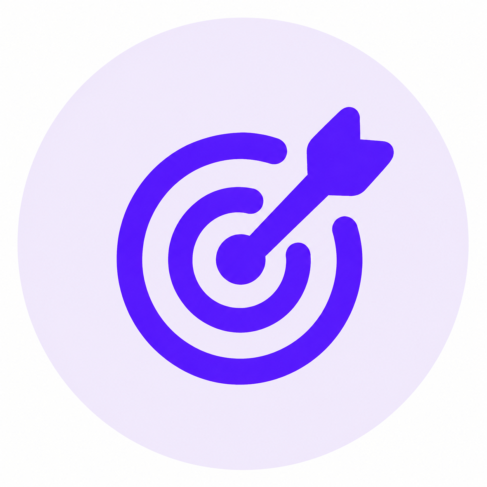

Sobre o Fin User 🚀
Bem-vindo ao Fin User! Somos uma plataforma dedicada a ajudar você a gerir sua finança de forma eficiente e simples.
Sobre o Fin User
Criei o Fin User para ajudar a galera jovem a gerir suas finanças da melhor maneira...
Acreditamos que pequenas mudanças hoje podem gerar grandes conquistas amanhã.


Nossa Missão
Simplificar a gestão financeira das pessoas, oferecendo ferramentas intuitivas que promovem educação financeira e melhores decisões.

Nossa Visão
Ser a plataforma líder em organização financeira pessoal no Brasil, transformando a relação das pessoas com o dinheiro.

Nossos Valores
- Simplicidade
- Transparência
- Segurança
- Educação financeira
- Foco no usuário
👋 Quem sou eu?"
Oi! Eu sou o Brunin👋
💡Por que criei o Fin User?
Criei o Fin User para ajudar a galera jovem a gerir suas finanças da melhor maneira, sem aquela chatice de planilha — algo simples que te dá controle sem complicação.
🎯 O que é a Fin User?
O Fin User é uma plataforma de gestão financeira pessoal que ajuda os usuários a monitorarem suas receitas, despesas, investimentos e metas financeiras de forma simples e eficiente.
Me encontra no LinkedIn 🔗